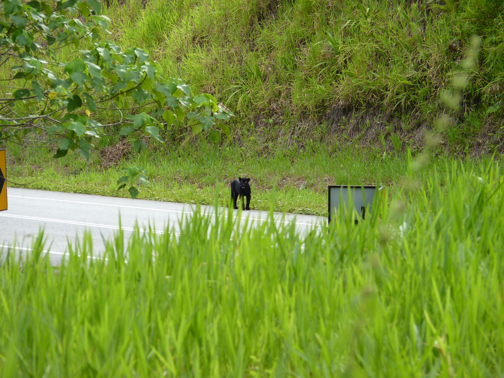

In 1967 the Florida Panther was listed as endangered. Their numbers have increased from 12 to 200. But, many are being killed every year from car accidents and decresed habitat. The Florida panther is still a threatened species that needs protection.
 Home Page